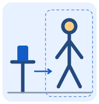

מעבדת המצלמה
ניסוי נפרד · הווידאו נשאר במכשיר · בלי הקלטה ובלי העלאה
לפני שמתחילים
ננסה יחד עם מבוגר. בוחרים מקום פנוי ומואר. אם לא נעים — עוצרים.
מציבים את המכשיר

מניחים את המכשיר יציב בגובה המותניים, במרחק כ־2–3 מטרים. עומדים מולו כך שרואים ראש, ידיים וקרסוליים. משאירים מקום מעל הראש לקפיצות.
טוענים את המודל המקומי…
מדידת ביצועים (ללא תמונות או נקודות גוף)
ממתינים לפריים
הלוג מכיל FPS, זמן עיבוד וזמן סבב לכל פריים. נשמרים עד 600 פריימים בזיכרון בלבד.
סיימנו את הניסוי
זו ספירה ניסיונית, וייתכן שהמצלמה טעתה. אם לא ברור מה קרה, כדאי לשאול מבוגר.